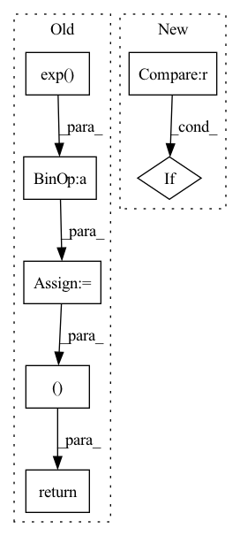

Pattern ID :2716
Before Change
def forward(self, audio, audio_len):
if random.random() < 0.2:
audio_mask = (torch.arange(audio.shape[1], device=audio.device)[None, :, None] < audio_len[:, None, None]).float()
x = torch.exp( audio - 1e-6) * audio_mask
y = torch.cat([x[1:], x[:1]])
return torch.log(0.9 * x + 0.1 * y + 1e-6) * audio_mask, audio_len
return audio, audio_len
After Change
audio, audio_len = self.timestretch(audio, audio_len)
if random.random() < AUGUMENT_RATE:
audio = self.pitchshift(audio)
if random.random() < AUGUMENT_RATE :
audio = self.timemask(audio)
if random.random() < AUGUMENT_RATE:
audio = self.freqmask(audio)
if random.random() < AUGUMENT_RATE:In pattern: SUPERPATTERN
Frequency: 3
Non-data size: 7
Instances Fragment ID: 15165829
Project Name: kaiidams/voice100
Commit Name: dfe0234fcc858357cb2a91bcba1da06792eabab7
Time: 2021-06-25
Author: katsuya.iida@gmail.com
File Name: voice100/audio.py
M Class Name: BatchSpectrogramAugumentation
N Class Name: BatchSpectrogramAugumentation
M Method Name: forward(3)
N Method Name: forward(3)
M Parent Class: nn.Module
N Parent Class: nn.Module
M File Name: voice100/audio.py
N File Name: voice100/audio.py
M Start Line: 73
M End Line: 78
N Start Line: 80
N End Line: 95
Before Change
// attention GMM parameters
g_t = torch.softmax(g_t, dim=-1) + self.epsilon // distribution weight
sig_t = torch.exp(b_t) + self.epsilon // variance
mu_t = self.mu_tm1 + self.attention_alignment * torch.exp( k_t) // mean
g_t = g_t.unsqueeze(2).expand(g_t.size(0),
g_t.size(1),
inputs.size(1))
sig_t = sig_t.unsqueeze(2).expand_as(g_t)
mu_t_ = mu_t.unsqueeze(2).expand_as(g_t)
j = self.J[:g_t.size(0), :, :inputs.size(1)]
// attention weights
phi_t = g_t * torch.exp(-0.5 * sig_t * (mu_t_ - j)**2)
alpha_t = self.COEF * torch.sum(phi_t, 1)
// apply masking
// if mask is not None:
// alpha_t.data.masked_fill_(~mask, self._mask_value)
breakpoint()
c_t = torch.bmm(alpha_t.unsqueeze(1), inputs).squeeze(1)
self.mu_tm1 = mu_t
return c_t, mu_t, alpha_t
class Attention(nn.Module):
// Pylint gets confused by PyTorch conventions hereAfter Change
alpha_t = torch.sum(phi_t, 1)
// apply masking
if mask is not None :
alpha_t.data.masked_fill_(~mask, self._mask_value)
context = torch.bmm(alpha_t.unsqueeze(1), inputs).squeeze(1)
self.attention_weights = alpha_t Fragment ID: 15165871
Project Name: coqui-ai/tts
Commit Name: adf9ebd629abc21e0969db2a1c29f389b5301c9d
Time: 2019-11-12
Author: egolge@mozilla.com
File Name: layers/common_layers.py
M Class Name: GravesAttention
N Class Name: GravesAttention
M Method Name: forward(4)
N Method Name: forward(4)
M Parent Class: nn.Module
N Parent Class: nn.Module
M File Name: layers/common_layers.py
N File Name: layers/common_layers.py
M Start Line: 141
M End Line: 169
N Start Line: 149
N End Line: 180
Before Change
// w_1 = torch.exp(-0.1*(range_param.unsqueeze(-1) ** -2) * (t - c) ** 2) // [B, L, T]
// w_2 = torch.sum(torch.exp(-0.1*(range_param.unsqueeze(-1) ** -2) * (t - c) ** 2), dim=1, keepdim=True) // [B, 1, T]
w_1 = torch.exp( -0.1 * (t - c) ** 2) // [B, L, T]
w_2 = torch.sum(torch.exp(-0.1 * (t - c) ** 2), dim=1, keepdim=True) // [B, 1, T]
w_2[w_2==0.] = 1.
// w_1 = self.normpdf(t, c, range_param.unsqueeze(-1)) // [B, L, T]
// w_1 = torch.distributions.normal.Normal(c, 0.1).log_prob(t) // [B, L, T]
// w_2 = torch.sum(w_1, dim=1, keepdim=True) // [B, 1, T]
// w_2[w_2==0.] = 1.
w = w_1 / w_2
out = torch.matmul(w.transpose(1, 2), encoder_outputs)
return out, w
class DurationPredictor(nn.Module):
Duration Parameter Predictor After Change
w = self.get_alignment_energies(g, t) // [B, L, T]
if mask is not None :
w = w.masked_fill(mask.unsqueeze(-1), 0.0)
attn = w / (torch.sum(w, dim=1).unsqueeze(1) + 1e-8) // [B, L, T]
out = torch.bmm(attn.transpose(1, 2), encoder_outputs) Fragment ID: 15165836
Project Name: keonlee9420/wavegrad2
Commit Name: 523ec241c64ab635218f32d071fd85fbc469e178
Time: 2021-07-13
Author: keonlee9420@gmail.com
File Name: model/modules.py
M Class Name: GaussianUpsampling
N Class Name: GaussianUpsampling
M Method Name: forward(4)
N Method Name: forward(4)
M Parent Class: nn.Module
N Parent Class: nn.Module
M File Name: model/modules.py
N File Name: model/modules.py
M Start Line: 115
M End Line: 135
N Start Line: 120
N End Line: 134